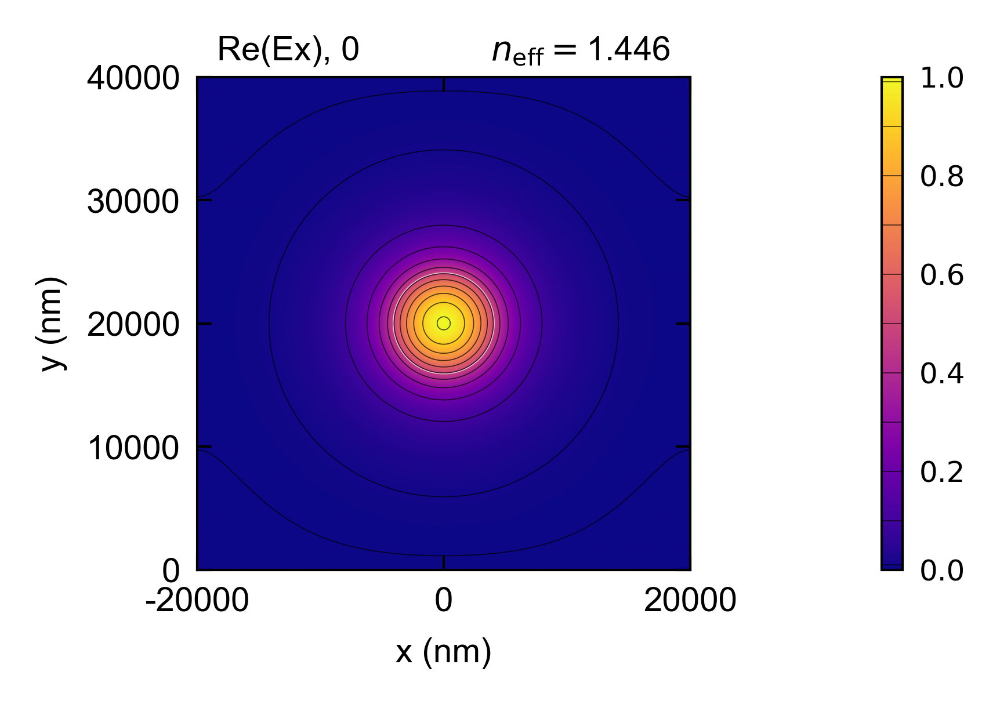

SMF-28 Fiber
A step-index model of Corning SMF-28 single-mode fiber: the fundamental (LP01) mode’s effective index and group index at 1310 and 1550 nm, solved with the FDM and the FEM and compared with the closed-form Bessel-function solutions, its mode field diameter, and whether the second mode (LP11) is guided at 1260 nm, the datasheet’s cable cutoff.
A step-index fiber is one of the few waveguides with a known closed-form solution, so this is a good example for comparing the accuracy of EMode’s solvers with a theoretical approach. For this exact problem the Bessel-function approach is the more accurate and the faster one, since it solves a single equation rather than a whole cross-section. The FDM and the FEM are for the general case: geometries and refractive index profiles that have no closed-form solution, such as graded or noncircular cores, several cores, anisotropic or lossy materials, and bends.
The cladding is fused silica, with Malitson’s Sellmeier equation, and the core is the same material
raised slightly in index, both declared with add_material. The ‘TE’ boundary condition folds the
window by both of the core’s mirror planes, so a quarter of it is solved.
The FDM and the FEM agree with each other and with the exact vector (HE11) Bessel solution to within a part in a million, and their group indices, which include the silica’s material dispersion, match the Bessel solution and the datasheet. The textbook scalar (LP01) solution of a weakly guiding fiber sits slightly above the vector one. What remains between the solvers and the vector solution comes from the round core being drawn as a 128-sided polygon, not from the solvers. The FEM needs EMode3D.
The mode field diameter (the datasheet’s Petermann II definition) is inside the datasheet’s range at 1550 nm and just under it at 1310 nm. The closed-form step-index field gives the same diameters, so the difference is the model’s: the real fiber’s core is not a perfect step.
LP11 is still guided at 1260 nm in a straight fiber of this model. The datasheet’s cutoff is a cable cutoff, measured on cabled fiber with loops, where bending strips out an LP11 that is so close to its own cutoff. A straight mode solve does not model that loss.
This code example is licensed under the BSD 3-Clause License.
import sys
import numpy as np
import emodeconnection as emc
from matplotlib import pyplot as plt
from scipy.optimize import brentq
from scipy.special import j0, j1, k0, k1
## Set simulation parameters: a step-index model of Corning SMF-28
wavelengths = [1310, 1550] # [nm]
cutoff_wavelength = 1260 # [nm] the datasheet's cable cutoff, at most
dx, dy = 50, 50 # [nm] resolution
core_radius = 4.1e3 # [nm]
delta_n = 0.0053 # [-] core index above the cladding (delta of about 0.36 %)
window = 40e3 # [nm] window width and height
em = emc.EMode(emode_cmd=sys.argv[1:], simulation_name='fiber_smf28')
## The cladding is fused silica (Malitson's Sellmeier equation, built in as
## 'SiO2'), and the core is the same equation raised by delta_n
malitson = ('(1 + 0.6961663/(1 - (0.0684043/x)^2) + 0.4079426/(1 - (0.1162414/x)^2)'
' + 0.8974794/(1 - (9.896161/x)^2))^0.5')
em.add_material(name='SiO2_clad', refractive_index_equation=malitson, wavelength_unit='um')
em.add_material(name='SiO2_core', refractive_index_equation=f'{malitson} + {delta_n}',
wavelength_unit='um')
def n_silica(wavelength):
x2 = (wavelength/1000)**2
return np.sqrt(1 + 0.6961663*x2/(x2 - 0.0684043**2) + 0.4079426*x2/(x2 - 0.1162414**2)
+ 0.8974794*x2/(x2 - 9.896161**2))
## The 'TE' boundary condition folds the round core by both mirror planes, so
## a quarter of the window is solved
em.settings(
wavelength=wavelengths[0], x_resolution=dx, y_resolution=dy,
window_width=window, window_height=window, num_modes=1,
boundary_condition='TE', background_material='SiO2_clad')
em.shape(name='core', material='SiO2_core', shape_type='ellipse',
width=2*core_radius, height=2*core_radius, position=[0, window/2])
def bessel_n_eff(wavelength, vector):
"""The closed-form LP01 (scalar) or HE11 (vector) index of the round step-index core."""
n_clad = n_silica(wavelength)
n_core = n_clad + delta_n
k = 2*np.pi/wavelength
V = k*core_radius*np.sqrt(n_core**2 - n_clad**2)
r = (n_clad/n_core)**2
def mismatch(u):
w = np.sqrt(V**2 - u**2)
if not vector:
return u*j1(u)/j0(u) - w*k1(w)/k0(w)
J = (j0(u) - j1(u)/u)/(u*j1(u)) # J1'(u) / (u J1(u))
K = (-k0(w) - k1(w)/w)/(w*k1(w)) # K1'(w) / (w K1(w))
return (J + K)*(J + r*K) - (1/u**2 + 1/w**2)*(1/u**2 + r/w**2)
u = brentq(mismatch, 1e-3, min(V, 2.404825) - 1e-9, xtol=1e-15)
return np.sqrt(n_core**2 - (u/(k*core_radius))**2)
def bessel_group_index(wavelength, vector):
"""The same forward difference group_index() takes, at 1.0001 times the wavelength."""
n = bessel_n_eff(wavelength, vector)
return n - (bessel_n_eff(1.0001*wavelength, vector) - n)/1e-4
def mode_field_diameter():
"""Petermann II: 2 sqrt(2 integral(E^2) / integral(|grad E|^2)), from Ex."""
field = em.get_fields(key='Ex')
Ex = np.abs(np.asarray(field.field)[0]) # [x, y], unfolded to the full window
gx, gy = np.gradient(Ex, field.grid.x, field.grid.y)
return 2*np.sqrt(2*np.sum(Ex**2)/np.sum(gx**2 + gy**2))
def solve(solver):
"""n_eff and group index of LP01, from em.FDM() or em.FEM()."""
solver()
n_eff = float(np.real(np.asarray(em.get('effective_index'))[0]))
## group_index() solves again at a wavelength 1e-4 longer, so it includes
## the silica's material dispersion as well as the guide's
n_g = float(np.real(np.asarray(em.group_index())[0]))
return n_eff, n_g
## Solve LP01 with the FDM and with the FEM (EMode3D) at each wavelength. The
## mode field diameter and the field plot come from the FDM.
rows, mfds = [], {}
for wavelength in wavelengths:
em.settings(wavelength=wavelength)
for label, vector in (('Bessel, scalar LP01', False), ('Bessel, vector HE11', True)):
rows.append((label, wavelength, bessel_n_eff(wavelength, vector),
bessel_group_index(wavelength, vector)))
rows.append(('FDM', wavelength, *solve(em.FDM)))
mfds[wavelength] = mode_field_diameter()
if wavelength == 1550:
em.plot(component='Ex', aspect_ratio='real', file_name='fiber_LP01_Ex', file_type='png')
rows.append(('FEM', wavelength, *solve(em.FEM)))
## LP11 at the cable cutoff wavelength: its Ex is odd about the vertical
## mirror plane, so the 'SA' walls hold it and not LP01
em.settings(wavelength=cutoff_wavelength, boundary_condition='SA')
em.FDM()
n_lp11 = float(np.real(np.asarray(em.get('effective_index'))[0]))
n_clad = n_silica(cutoff_wavelength)
def v_number(wavelength):
n = n_silica(wavelength)
return 2*np.pi*core_radius/wavelength*np.sqrt((n + delta_n)**2 - n**2)
## The step-index model's LP11 cutoff, where V = 2.405 (the first zero of J0)
lp11_cutoff = cutoff_wavelength
for _ in range(5):
lp11_cutoff *= v_number(lp11_cutoff)/2.405
datasheet_group_index = {1310: 1.4676, 1550: 1.4682}
print(f'\n{"LP01":22s}{"wavelength":>12s}{"n_eff":>14s}{"group index":>14s}')
for label, wavelength, n_eff, n_g in rows:
print(f'{label:22s}{wavelength:>9d} nm{n_eff:>14.9f}{n_g:>14.6f}')
for wavelength in wavelengths:
print(f'{"datasheet":22s}{wavelength:>9d} nm{"-":>14s}{datasheet_group_index[wavelength]:>14.4f}')
print()
for wavelength in wavelengths:
print(f'LP01 MFD at {wavelength} nm: {mfds[wavelength]/1000:.2f} um')
print(f'cladding index at {cutoff_wavelength} nm: {n_clad:.7f}')
print(f'LP11 n_eff at {cutoff_wavelength} nm: {n_lp11:.7f}')
print(f'LP11 guided at {cutoff_wavelength} nm: {"yes" if n_lp11 > n_clad else "no"}')
print(f'V number at {cutoff_wavelength} nm: {v_number(cutoff_wavelength):.3f}')
print(f'LP11 cutoff of the step-index model (V = 2.405): {lp11_cutoff:.0f} nm')
em.close()
Console output:
EMode3D 1.0.7 - email
Meshing completed in 0.3 sec
Solving modes completed in 1.8 sec
Meshing completed in 0.1 sec
Solving modes completed in 8.7 sec
Meshing completed in 0.1 sec
Solving modes completed in 2.0 sec
Meshing completed in 0.0 sec
Solving modes completed in 6.0 sec
Meshing completed in 0.1 sec
Solving modes completed in 3.0 sec
LP01 wavelength n_eff group index
Bessel, scalar LP01 1310 nm 1.449664402 1.467628
Bessel, vector HE11 1310 nm 1.449660103 1.467630
FDM 1310 nm 1.449659457 1.467630
FEM 1310 nm 1.449659476 1.467630
Bessel, scalar LP01 1550 nm 1.446329779 1.468334
Bessel, vector HE11 1550 nm 1.446324467 1.468334
FDM 1550 nm 1.446323766 1.468334
FEM 1550 nm 1.446323781 1.468334
datasheet 1310 nm - 1.4676
datasheet 1550 nm - 1.4682
LP01 MFD at 1310 nm: 8.79 um
LP01 MFD at 1550 nm: 9.95 um
cladding index at 1260 nm: 1.4473700
LP11 n_eff at 1260 nm: 1.4475323
LP11 guided at 1260 nm: yes
V number at 1260 nm: 2.535
LP11 cutoff of the step-index model (V = 2.405): 1328 nm
Exited EMode
Figures:
